Definíció: Egy esemény bekövetkezésének esélye intervallumon.
Valószínűségi mező: Egy K kisérlet eredményei, amelyeket nem tudunk felosztani kisebb részekre elemi eseményeknek nevezzük. Az elemi eseményeket jelölik. Az összes elemi esemény halmazát mintatérnek (valószínűségi térnek) nevezzük. Jelölése:
Példa:
Érmedobás: =
Klasszikus valószínűség:
Definíció: ha egy kisérlet lehetséges kimenetelei egyenlően valószínűek, akkor esemény valószínűsége:
Például: Feldobunk egy szabályos dobókockát, mennyi a valószínűsége, hogy párost dobunk?
Kedvező esetek száma:
Összes eset száma:
ahol a hossz, terület vagy térfogat, ha egyenesen, síkon vagy térben vagyunk.
Például: Adott egy egységhosszú négyzet, benne egy fél egység sugarú kör. Mennyi a valószínűsége hogy véletlenszerűen választva egy pontot a pont a kör belsejébe fog esni?
Négyzet területe:
Kör területe:
Permutáció: megkülönböztethető eleme összes lehetséges sorrendje
Feladat: Hányféleképpen lehet 5 különböző könyvet egy polcra sorba rendezni?
Ismétléses permutáció: elem összes lehetséges sorrendje, ha az elemek között vannak egyformák is, és ezek rendre alkalommal fordulnak elő.
Feladat: Hány különböző szó rakható ki a KAKAS szó betűiből?
Itt 5 betű van, ebből a K és az A kétszer szerepel.
Variáció: darab különböző elemből
elemet választunk ki úgy, hogy a kiválasztott elemek sorrendje számít, és egy elem legfeljebb egyszer szerepelhet.
Feladat: 8 tanuló közül hányféleképpen választható ki az első 3 helyezett?
Ismétléses variáció: darab különböző elemből elemet választunk ki úgy, hogy a sorrend számít, és egy elem többször is szerepelhet.
Feladat: Hány 4 jegyű kód készíthető a 0–9 számjegyekből, ha egy számjegy többször is szerepelhet?
Minden helyre 10 lehetőség van.
Kombináció: darab különböző elemből elemet választunk ki úgy, hogy a sorrend nem számít, és minden elem legfeljebb egyszer választható.
Feladat: 12 tanuló közül hányféleképpen választhatunk ki 4 főt egy csapatba?
Ismétléses kombináció: darab különböző elemből elemet választunk ki úgy, hogy a sorrend nem számít, és egy elem többször is választható.
Feladat: Hányféleképpen választhatunk 5 gombóc fagyit 3 féle ízből, ha egy ízből többet is lehet kérni.
Binomiális együtthatók szimmetriatulajdonsága:
ha
Binomiális tétel:
Definíció: a feltételes valószínűség megmutatja valószínűségét, ha bekövetkezett:
Például: Egy urnában van 3 piros, 2 kék, 5 zöld golyó. Mennyi annak a valószínűsége, hogy a kihúzott golyó piros, ha tudjuk hogy egy zöldet sem húztunk?
Definíció: Legyen teljes eseményrendszer. Ha bármely esetén, akkor :
Például: Egy gyárban három gép gyárt termékeket.
Az első gép a termékek 50%-át gyártja, és a hibás termékek aránya 2%.
A második gép a termékek 30%-át gyártja, és a hibás termékek aránya 3%.
A harmadik gép a termékek 20%-át gyártja, és a hibás termékek aránya 5%.
Mi annak a valószínűsége hogy véletlenszerűen választva hibás terméket húzunk ki?
Hibás termék
A terméket az . gép gyártja
Hibás termék, feltéve, hogy a terméket az . gép gyártotta
| Első gép | Második gép | Harmadik gép | |
|---|---|---|---|
Bayes formula:
Bayes tétel:
Például: Mennyi a valószínűsége, hogy a második gépből húzzuk ki a terméket, ha tudjuk hogy hibás?
Definíció: esemény független eseménytől, ha bekövetkezése nincs hatással valószínűségére. Azaz:
Definíció: Azt mondjuk hogy és független, ha:
Például: egy szabályos hatoldalú dobókockát feldobunk egyszer, és megvizsgáljuk a következő eseményeket:
Független-e és ?
, tehát a két esemény nem független
Definíció: Azt mondjuk, hogy az események páronként függetlenek, ha közülük bármely kettő független, azaz:
Definíció: Azt mondjuk, hogy az események teljesen függetlenek, ha bármely eseményszámra és bármely indexű eseményekre független, azaz:
Például: kétszer feldobunk egy pénzérmét.
Páronként függetlenek az események?
Ugyanez igaz és -re is, tehát az események páronként függetlenek.
Teljesen függetlenek az események?
Tehát ezek az események nem teljesen függetlenek.
Algoritmusok futási ideje egy adott bemenetre végrehajtott alapműveletek, vagy lépések száma. Kényelmes úgy definiálni, hogy a pszeudokód mindegyik sora egy lépés, és minden egyes sorhoz állandó mennyiségű idő szükséges.
Lépések osztályozása:
Definíció: Egy adott függvény esetén jelöli a függvényeknek azt a halmazát, amelyre létezik és pozitív állandó úgy, hogy teljesül minden esetén.
Magyarázat:
Ez azt jelenti, hogy az függvény nagy esetén legfeljebb olyan gyorsan nő, mint a függvény, egy konstans szorzótól eltekintve.
Vagyis egy bizonyos értéktől kezdve az mindig kisebb vagy egyenlő, mint a függvény -szerese.
Tehát a felső becslést ad az növekedésére.
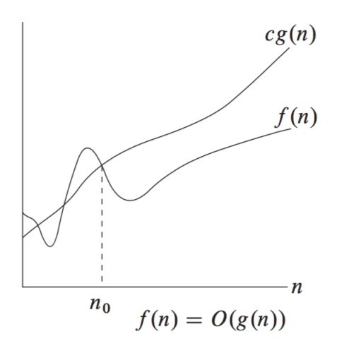
Példa a használatára:
Az aszimptotikus felső korlátot algoritmusok futási idejének vagy memóriaigényének becslésére használjuk.
Ha például egy algoritmus futási ideje , akkor azt mondjuk, hogy , mert nagy esetén a növekedést az tag határozza meg.
Definíció: Egy adott függvény esetén jelöli a függvényeknek azt a halmazát, amelyre létezik és pozitív állandó úgy, hogy teljesül minden esetén.
Magyarázat:
Ez azt jelenti, hogy az függvény nagy esetén legalább olyan gyorsan nő, mint a függvény, egy konstans szorzótól eltekintve.
Vagyis egy bizonyos értéktől kezdve az mindig nagyobb vagy egyenlő, mint a függvény -szerese.
Tehát az alsó becslést ad az növekedésére.
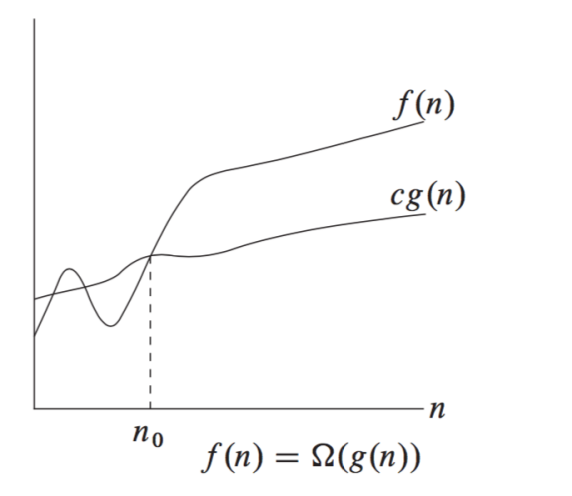
Példa a használatára:
Az aszimptotikus alsó korlátot arra használjuk, hogy megadjuk, egy algoritmus futási ideje vagy memóriaigénye legalább milyen nagyságrendben nő.
Ha például egy algoritmus futási ideje , akkor azt mondjuk, hogy , mert nagy esetén a függvény értéke legalább egy konstansszorosa az -nek.
Definíció: Egy adott függvény esetén jelöli a függvényeknek azt a halmazát, amelyre létezik , és pozitív állandó úgy, hogy teljesül minden esetén.
Magyarázat:
Ez azt jelenti, hogy az függvény nagy esetén ugyanabban a nagyságrendben nő, mint a függvény.
Vagyis egy bizonyos értéktől kezdve az alulról és felülről is becsülhető a megfelelő konstansszorosaival.
Tehát a azt fejezi ki, hogy az növekedési rendje lényegében megegyezik a növekedési rendjével.
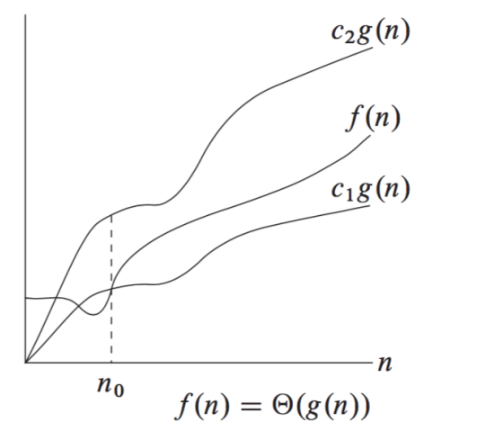
Példa a használatára:
Az aszimptotikus éles korlátot arra használjuk, hogy pontosabban megadjuk egy algoritmus futási idejének vagy memóriaigényének növekedési rendjét.
Ha például egy algoritmus futási ideje , akkor azt mondjuk, hogy , mert nagy esetén a függvény értéke alulról és felülről is becsülhető az egy-egy konstansszorosával.
Megvalósításához elengedhetetlen: lineáris adatszerkezet (pl. tömb vagy lista), amelyben az elemek egymás után tárolódnak, de nem kell, hogy rendezettek legyenek.
Beugrik az elejére, és sorban végighalad az elemeken, egyenként vizsgálva, hogy az aktuális elem megegyezik‑e a keresett értékkel. Ha igen, akkor azonnal megáll, és visszaadja az elem indexét. Ha nem, akkor a következő elemre lép, és ezt ismétli addig, amíg el nem éri a tömb végét. Ha a végigmenve sem talál egyezést, akkor valamilyen „nincs benne” jelzést ad vissza (például )
Lépésszám:
Megvalósításához elengedhetetlen: homogén adatszerkezet, rendezett adatok, folytonos reprezentáció (adatok közvetlen elérése).
Beugrik a közepére, megnézi, hogy az elem nagyobb-e, mint a keresett elem. Ha igen, akkor a tőle balra eső részt eldobja, és a jobb oldali intervallum közepébe ugrik. Ha nem, akkor a tőle jobbra eső részt dobja el, és a bal oldali intervallum közepébe ugrik.
Lépésszám:
A beszúrásos rendezés úgy működik, mintha egyenként raknánk sorba a tömb elemeit: a tömb elején mindig egy rendezett rész van, amelyhez a következő elemet sorban a helyére beszúrjuk úgy, hogy az annál nagyobb elemeket eggyel jobbra toljuk. Így a rendezett rész folyamatosan bővül, amíg az egész tömb rendezett nem lesz.
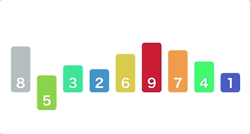
Legrosszabb eset: - ha a tömb csökkenő sorrendben van
Tulajdonságok: homogén, dinamikus, asszociatív, folytonos/szétszórt reprezentációval ábrázolt.
Két részből áll: kulcs (egyedi), érték (lehet összetett)
Az elemek azonosítása kulcs alapján történik.
Ismert táblázatok: soros táblázat, önátrendező táblázat, kulcstranszformációs táblázat (hash tábla)
Műveletei: , ,
Lényege, hogy a művelet használatakor a megtalált elemet előre hozzuk a táblázat legelső pozíciójába, így a leggyakrabban használt elemek kerülnek a táblázat elejére. Javasolt a láncolt reprezentáció és lineáris keresés.
| Kari büfé reggel | | | Kari büfé délben | | | Kari büfé este | |||
|---|---|---|---|---|---|---|---|
| 200 | coffee | | | 4.800 | steak | | | 290 | beer |
| 300 | sandwich | | | 200 | coffee | | | 1.120 | cigarette |
| 350 | cola | | | 350 | cola | | | 5.200 | whisky |
| 150 | tea | | | 400 | cake | | | 4.800 | steak |
| 1.120 | cigarette | | | 290 | beer | | | 350 | cola |
| 400 | cake | | | 300 | sandwich | | | 300 | sandwich |
| 5.200 | whiskey | | | 150 | tea | | | 400 | cake |
| 290 | beer | | | 1.120 | cigarette | | | 150 | tea |
| 4.800 | steak | | | 5.200 | whiskey | | | 200 | coffee |
| 14.500.000 | BMW | | | 14.500.000 | BMW | | | 14.500.000 | BMW |
Abban az esetben hatékony ha az kulcstér viszonylag kicsi.
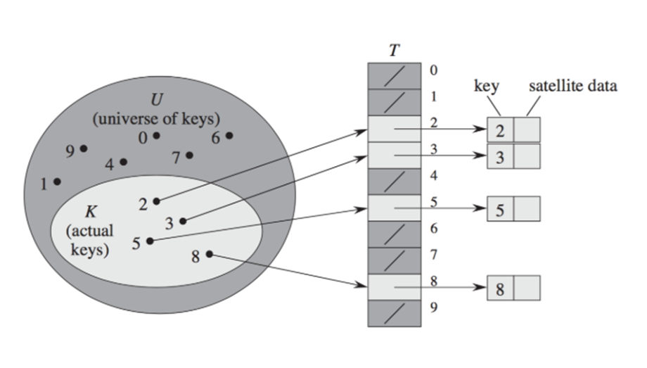
Ha a közvetlen címzésű táblázat kulcstere nagy, akkor a közvetlen tárolás nem hatékony, ezért célszerű a kulcsokat egy hash függvény segítségével egy kisebb, rögzített méretű táblába leképezni. A hash függvény feladata, hogy minden kulcsból egy táblaindexet számoljon ki úgy, hogy a kulcsok minél egyenletesebben szóródjanak szét a táblán.
Az osztásos módszerben a hash függvény alakja:
ahol a kulcs, pedig a hash‑tábla mérete.
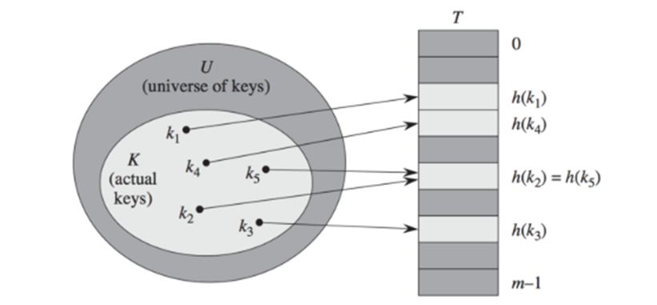
Több különböző kulcshoz is tartozhat ugyanaz a pozíció, ezt az esetet ütközésnek hívjuk. Az ütközést fel lehet oldani láncolt lista segítségével.
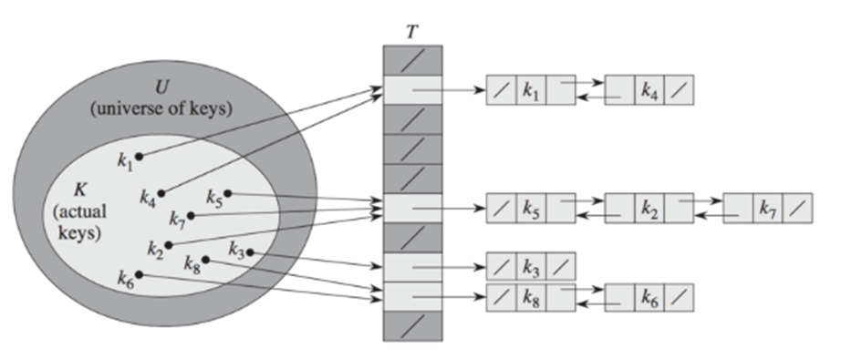
Ilyenkor minden elem magában a táblázatban tárolódik, ezért a táblázat egy pozíciójában vagy egy érték található, vagy pedig . Legfontosabb előnye, hogy nincs szükség más adatszerkezet használatára és mutatók kezelésére.
Például: hozzunk létre egy hash táblát nyílt címzés módszerével, ha tudjuk, hogy a hash fügvény:
| kulcs | szín |
|---|---|
| 19 | blue |
| 27 | red |
| 51 | green |
| 13 | blue |
| 37 | brown |
| 31 | pink |
| 25 | orange |
Megoldás:
| Maradék | Kulcs | Szín | Mutató |
|---|---|---|---|
| 0 | 27 | red | |
| 1 | 19 | blue | 2 |
| 2 | 37 | brown | |
| 3 | |||
| 4 | 13 | blue | 5 |
| 5 | 31 | pink | |
| 6 | 51 | green | |
| 7 | 25 | orange | |
| 8 |
Az irányítatlan gráf csúcsok véges halmazából, és élek véges halmazából áll.
Az irányított gráf olyan gráf, ahol az élek halmazát alkotó csúcspárok rendezettek.
Alkalmazási területei: legrövidebb út keresésére, homepagek megkeresése (homapage – csúcs, link - él), ismerősök hálózata szociális médiában (egyén – csúcs, kapcsolat - él), számítógép-hálózatok, hálós adatbázis-kezelő rendszerek.
Irányítatlan gráf reprezentációja:
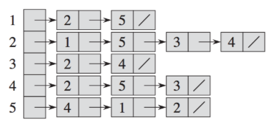
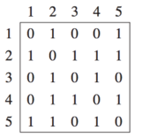
Irányíott gráf reprezentációja:
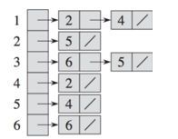
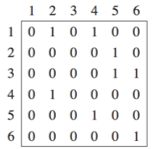
Ritka gráfok esetén a szomszédsági lista használata ajánlott , sűrű gráfok esetén pedig a szomszédsági mátrix
Szomszédsági mátrix: könnyű ellenőrizni, hogy a két csúcs között vezet-e él
Szomszédsági lista: könnyű végigmenni az egy adott csúcshoz tartozó összes élen
A szélességi bejárás sor adatszerkezettel dolgozik: a kezdőcsúcsból kiindulva szintenként járja be a gráfot, minden szintet teljesen felfedezve, mielőtt a következő szintre lépne.
Működése:
Alkalmazás: legrövidebb út keresése, szintek szerinti feldolgozás.
A mélységi bejárás verem adatszerkezettel dolgozik: egy ágon minél mélyebbre megy, csak akkor tér vissza, ha elakad.
Működése:
Alkalmazás: ciklusdetektálás, topológiai rendezés, komponensek számlálása.
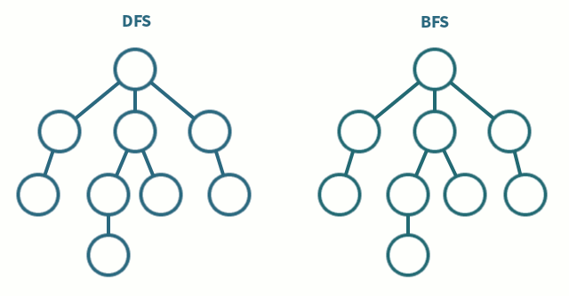